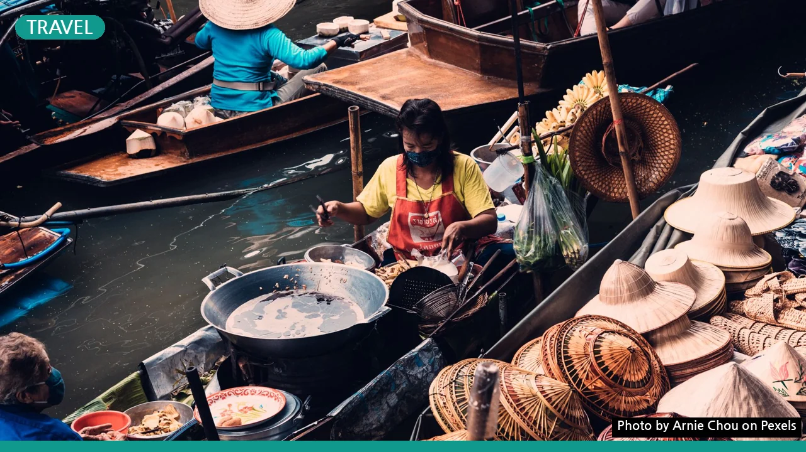
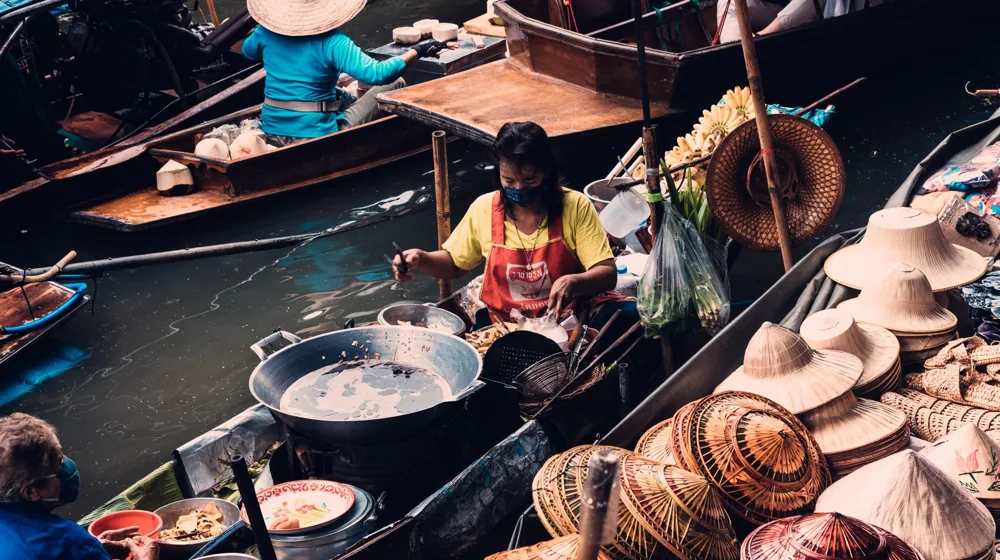

태국, 왜 갑자기 검색어 1위일까? 숨겨진 여행 트렌드의 반전
사진: Arnie Chou / Pexels (무료 이미지, 출처 표기)
혹시 태국에 대해 들어보셨나요?

네, 맞습니다. 우리에게 너무나도 익숙한 그 나라, 태국 말입니다. 그런데 오늘, 이 평범해 보이던 '태국'이라는 단어가 대한민국 인터넷을 뜨겁게 달구며 검색어 1위에 올랐습니다. 대체 왜 갑자기 '태국'이 난리일까요? 단순히 흔한 휴양지인 줄 알았던 태국, 그 이면에는 우리가 몰랐던 어떤 새로운 이야기가 숨겨져 있을까요?
매년 수많은 한국인이 찾는 태국이지만, 최근의 이 폭발적인 관심은 뭔가 다릅니다. 과거의 패키지여행 이미지를 넘어, 새로운 여행의 물결이 태국으로 향하고 있다는 신호일지도 모릅니다. 지금부터 그 궁금증을 하나씩 파헤쳐 보겠습니다.
갑자기 태국이 왜? 단순한 휴양을 넘어서
‘태국’ 하면 보통 방콕의 화려한 야경, 파타야의 해변, 푸껫의 에메랄드빛 바다를 떠올리실 겁니다. 하지만 최근 태국을 찾는 한국인들의 발길은 사뭇 다른 곳을 향하고 있습니다. 단순히 쉬고 즐기는 것을 넘어, '경험'과 '힐링', 그리고 '진정한 나를 찾는 시간'에 초점을 맞춘 여행이 뜨고 있는 것이죠.
팬데믹 이후 억눌렸던 여행 수요가 폭발하면서, 많은 이들이 이국적인 문화와 자연 속에서 새로운 활력을 찾으려 합니다. 태국은 이런 트렌드에 완벽하게 부합하는 목적지로 재조명받고 있습니다. 저렴한 물가, 친절한 사람들, 다채로운 즐길 거리는 여전하지만, 이제는 그 깊이와 폭이 더욱 확장된 것입니다.
방콕-파타야 말고? MZ세대가 열광하는 태국의 '이곳'
과거 태국 여행의 대명사가 방콕과 파타야였다면, 이제는 새로운 도시들이 여행자들의 마음을 사로잡고 있습니다. 특히 북부의 고도(古都) ‘치앙마이’는 젊은 세대와 디지털 노마드들에게 '한 달 살기'의 성지로 떠올랐습니다.
치앙마이는 고즈넉한 사원과 카페거리, 신선한 유기농 음식, 그리고 저렴한 가격으로 배울 수 있는 요가와 명상 클래스 등으로 유명합니다. 또한, ‘꼬따오’ 같은 작은 섬에서는 다이빙 자격증을 따거나 한적한 해변에서 온전한 휴식을 취하는 이들도 많습니다. 태국이 제공하는 여행의 스펙트럼이 얼마나 넓어졌는지 한눈에 알 수 있죠.
미식부터 웰니스까지, 태국이 선사하는 오감 만족의 비밀
태국은 '미식의 천국'이라는 명성에 걸맞게 길거리 음식부터 미슐랭 스타 레스토랑까지 다양한 스펙트럼을 자랑합니다. 팟타이, 쏨땀 같은 익숙한 메뉴 외에도 지역별 특색을 살린 숨겨진 맛집들이 끊임없이 발굴되고 있습니다. 특히, 태국 현지의 신선한 재료로 직접 요리를 배우는 쿠킹 클래스는 단순한 식사를 넘어선 특별한 경험을 제공하며 큰 인기를 끌고 있습니다.
또한, 태국 마사지는 이미 세계적으로 인정받는 웰니스 문화의 정수입니다. 최근에는 단순한 마사지를 넘어 요가, 명상, 디톡스 프로그램을 결합한 '웰니스 리트리트'가 주목받고 있습니다. 천연 허브를 이용한 스파부터 마음의 평화를 찾는 명상까지, 몸과 마음을 정화하고 재충전하는 시간을 가질 수 있어 지친 현대인들에게 더할 나위 없는 안식처가 되고 있습니다.
달라진 태국 여행, 이것만 알면 고수!
태국으로 떠나기 전, 몇 가지 달라진 점을 알고 가면 더욱 스마트한 여행을 즐길 수 있습니다. 우선, 대부분의 관광객은 비자 없이 90일까지 체류가 가능해졌습니다 (한국 국적 기준). 이는 '한 달 살기'나 장기 여행을 계획하는 이들에게 반가운 소식입니다.
또한, 디지털 결제가 보편화되어 현금 사용이 줄고 있습니다. 현지 QR 코드 결제 시스템인 '프롬프트페이(PromptPay)'가 활성화되어 있어, 트래블월렛 같은 서비스를 활용하면 편리합니다. 마지막으로, 태국 현지인들의 일상을 존중하고 친환경 여행을 실천하는 자세는 더욱 의미 있는 경험을 선물할 것입니다.
태국 열풍, 일시적일까? 지속될까?
지금의 태국 열풍은 단순한 유행을 넘어선 근본적인 변화를 보여줍니다. 태국 정부 역시 관광객들의 다양한 요구에 맞춰 의료 관광, 스포츠 관광, 미식 관광 등 특화된 테마 상품을 개발하며 매력을 더하고 있습니다.
전통적인 관광 자원에 새로운 가치를 불어넣고, 지속 가능한 여행을 추구하는 태국의 노력은 앞으로도 많은 이들의 발길을 이끌 것으로 보입니다. 익숙함 속에 숨겨진 신선한 매력으로 가득한 태국. 다음번 당신의 여행지는 어쩌면 태국이 아닐까요? 이 놀라운 변화의 흐름을 직접 경험해 보세요.
🔗 이 글도 함께 보면 좋아요: 유정복, 갑자기 검색어 1위? 단순한 이름 뒤 숨겨진 충격 반전!
관련 추천 상품
이 포스팅은 쿠팡 파트너스 활동의 일환으로, 이에 따른 일정액의 수수료를 제공받습니다.